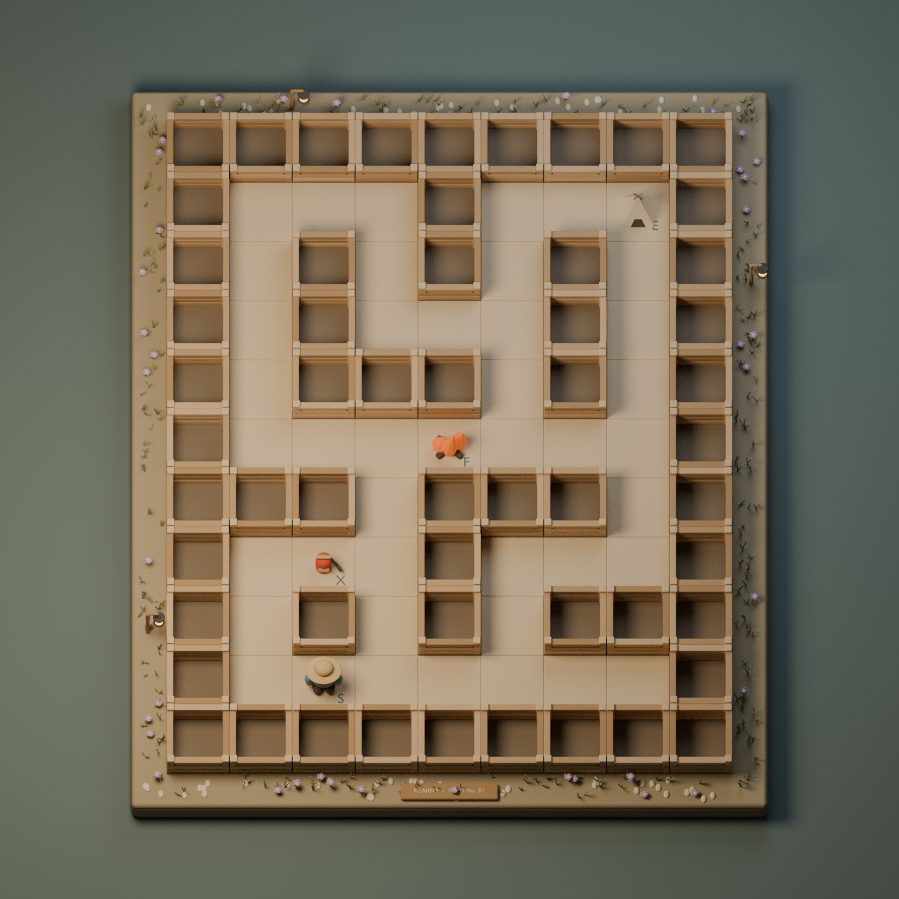

SXFEFC / 01 Natural daylight · identical geometry
- S Explorer
- X Extinguisher
- F Fire
- E Goal
STATIC CONCEPT STUDY · 9-column mazeOrthographic · 70° elevation · No fog01 / DAYLIGHT
This is an art review, not a playable maze. Nine columns by eleven rows. Wall collision remains logical and is not inferred from the spaces between slats. All objects have letter markers in addition to different silhouettes. Goal portrayal and independent accessibility review are pending.